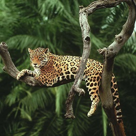
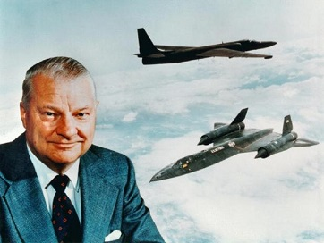

Projects: QCC TechWorks - Classes ET710 & ET712 - Fall 18
Mid-Term Project
ET712 - Fall 18
Natural Beauty - Guyana
The Midterm project was an open-ended project promoting creative work with code. The conceptual theme used here was to hight light the Natural Beauty of Guyana. Images were added in displaying some of the animals and plants of Guyana and in creating post-cards.
Portfolio Project
Tribute to Kelly Johnson
ET710 - Fall 18
The Fortune Teller demonstates the use of CSS (Cascading Style Sheets) in webpage presentation. Clicking the button on the Fortune Teller webpage will create color changes - CSS effects. CSS codes on a single pages can style multiple webpages. Therefore editing a single page can create changes on multiple webpages. This is the power of CSS; it creates confirmatity and effeciency in managing multiple webpages of a website.